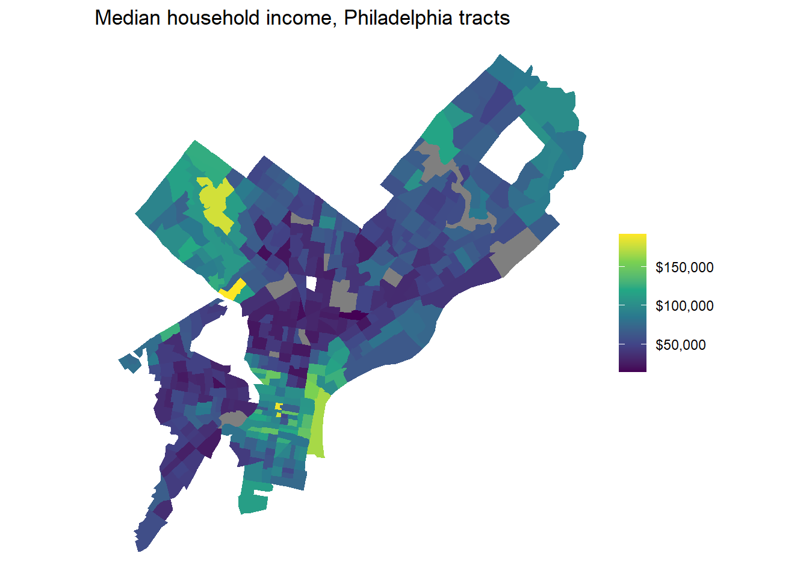

library(tidyverse)
library(tidycensus)
library(sf)
# Your key lives in .Renviron. Never paste it here.
# tidycensus reads CENSUS_API_KEY automatically.
Sys.getenv("CENSUS_API_KEY") != "" # should print TRUE[1] TRUEMUSA 5080 · In-class team challenge (ungraded)
This is a Lab: it’s ungraded and done in class. You work in teams of 3–4.
Type the code. Don’t copy and paste it. Blanks look like ___. Fill them in, then run the chunk.
The first hour (Parts 1–5) is guided and builds your toolkit. The last part is the challenge: your team answers one policy question and defends one decision. At the end, the presenter from each team is chosen at random, so everyone needs to understand every step.
The question: Indego says it serves low-income Philadelphians. Which low-income tracts are farthest from a station, and how sure are we that they’re low-income?
[1] TRUEThis is the same get_acs() call you already know. The only new part is geometry = TRUE.
|
| | 0%
|
| | 1%
|
|= | 1%
|
|= | 2%
|
|== | 3%
|
|=== | 4%
|
|=== | 5%
|
|==== | 5%
|
|==== | 6%
|
|===== | 7%
|
|===== | 8%
|
|====== | 8%
|
|====== | 9%
|
|======= | 10%
|
|======= | 11%
|
|======== | 11%
|
|======== | 12%
|
|========= | 12%
|
|========= | 13%
|
|========== | 14%
|
|========== | 15%
|
|=========== | 16%
|
|============ | 17%
|
|============= | 18%
|
|============= | 19%
|
|============== | 20%
|
|=============== | 21%
|
|=============== | 22%
|
|================ | 23%
|
|================= | 24%
|
|================= | 25%
|
|================== | 26%
|
|=================== | 27%
|
|=================== | 28%
|
|==================== | 29%
|
|===================== | 30%
|
|===================== | 31%
|
|====================== | 32%
|
|======================= | 33%
|
|======================= | 34%
|
|======================== | 35%
|
|========================= | 36%
|
|========================== | 37%
|
|=========================== | 38%
|
|============================ | 39%
|
|============================ | 40%
|
|============================= | 41%
|
|============================== | 42%
|
|============================== | 43%
|
|=============================== | 44%
|
|================================ | 45%
|
|================================ | 46%
|
|================================= | 47%
|
|================================== | 48%
|
|================================== | 49%
|
|=================================== | 50%
|
|==================================== | 51%
|
|===================================== | 52%
|
|===================================== | 53%
|
|====================================== | 54%
|
|======================================= | 55%
|
|======================================= | 56%
|
|======================================== | 57%
|
|========================================= | 58%
|
|========================================= | 59%
|
|========================================== | 60%
|
|=========================================== | 61%
|
|=========================================== | 62%
|
|============================================ | 63%
|
|============================================= | 64%
|
|============================================= | 65%
|
|============================================== | 66%
|
|=============================================== | 67%
|
|================================================ | 68%
|
|================================================ | 69%
|
|================================================= | 70%
|
|================================================== | 71%
|
|================================================== | 72%
|
|=================================================== | 73%
|
|==================================================== | 74%
|
|==================================================== | 75%
|
|===================================================== | 76%
|
|====================================================== | 77%
|
|====================================================== | 78%
|
|======================================================= | 79%
|
|======================================================== | 80%
|
|======================================================== | 81%
|
|========================================================= | 82%
|
|========================================================== | 83%
|
|========================================================== | 84%
|
|=========================================================== | 85%
|
|============================================================ | 86%
|
|============================================================= | 86%
|
|============================================================= | 87%
|
|============================================================== | 88%
|
|=============================================================== | 89%
|
|=============================================================== | 90%
|
|================================================================ | 92%
|
|================================================================= | 93%
|
|================================================================== | 94%
|
|================================================================== | 95%
|
|=================================================================== | 96%
|
|==================================================================== | 97%
|
|==================================================================== | 98%
|
|===================================================================== | 99%
|
|======================================================================| 100%[1] "sf" "data.frame"Rows: 408
Columns: 7
$ GEOID <chr> "42101001500", "42101001800", "42101002802", "42101004001",…
$ NAME <chr> "Census Tract 15; Philadelphia County; Pennsylvania", "Cens…
$ med_incE <dbl> 108378, 121719, 94427, 82258, 32997, 60817, 61621, 29122, 8…
$ med_incM <dbl> 24143, 37496, 47914, 28135, 4045, 17642, 5502, 18512, 7973,…
$ total_popE <dbl> 3027, 3285, 5868, 4118, 4380, 1815, 3831, 2943, 4637, 5038,…
$ total_popM <dbl> 676, 345, 867, 456, 805, 202, 495, 785, 775, 830, 634, 868,…
$ geometry <MULTIPOLYGON [°]> MULTIPOLYGON (((-75.16558 3..., MULTIPOLYGON (…Stop and look: What does class() show? Which column is new?
Now repeat the Week 3 steps. A data frame goes in, a data frame comes out. The geometry column comes along automatically.
[1] "GEOID" "NAME" "med_incE" "med_incM" "total_popE"
[6] "total_popM" "geometry" "med_inc_se" "med_inc_cv" "reliability"Your first map. It’s just ggplot with a new geom:

Quick check: How many tracts have NA income even though they have people living in them? Write the code to count them.
How much has income changed since 2015? Pull the older estimates. No geometry is needed, because this is just a table.
[1] 384[1] 391Stop and look: The row counts are different. Before you join, predict why.
Now join the 2015 table onto your tracts. The key is the column both tables share.
[1] 391The rule: after every join, count rows and count NAs.
n_tracts no_2015_match
1 391 35Now look at which tracts failed to match:
GEOID NAME
1 42101020702 Census Tract 207.02; Philadelphia County; Pennsylvania
2 42101012502 Census Tract 125.02; Philadelphia County; Pennsylvania
3 42101013701 Census Tract 137.01; Philadelphia County; Pennsylvania
4 42101016002 Census Tract 160.02; Philadelphia County; Pennsylvania
5 42101036901 Census Tract 369.01; Philadelphia County; Pennsylvania
6 42101013702 Census Tract 137.02; Philadelphia County; Pennsylvania
7 42101000101 Census Tract 1.01; Philadelphia County; Pennsylvania
8 42101000404 Census Tract 4.04; Philadelphia County; Pennsylvania
9 42101000805 Census Tract 8.05; Philadelphia County; Pennsylvania
10 42101000102 Census Tract 1.02; Philadelphia County; Pennsylvania# A tibble: 10 × 3
GEOID med_inc_15E med_inc_15M
<chr> <dbl> <dbl>
1 42101018800 21949 5375
2 42101020700 51268 8987
3 42101013700 35033 4377
4 42101000100 92207 16328
5 42101001300 81250 18169
6 42101016000 45030 8727
7 42101036900 47083 16973
8 42101038300 21500 8025
9 42101014200 83924 4648
10 42101004102 34102 4092Discuss as a team: Did these places move? What changed between 2015 and 2023? Why can’t left_join() fix this? Keep your answer in mind; Part 3 comes back to it.
Some NAs aren’t boundary changes. A tract can match but have NA income because the Census suppressed the estimate. How would you tell the two kinds of NA apart?
Indego publishes live station locations as GeoJSON. st_read() reads it directly from the URL.
[1] 319Rows: 319
Columns: 34
$ id <int> 3004, 3005, 3006, 3007, 3008, 3009, 3010, 3012,…
$ name <chr> "Municipal Services Building Plaza", "Welcome P…
$ totalDocks <int> 23, 13, 17, 20, 17, 14, 22, 27, 25, 11, 15, 15,…
$ docksAvailable <int> 22, 2, 10, 11, 13, 10, 14, 13, 22, 6, 10, 6, 13…
$ bikesAvailable <int> 0, 10, 5, 6, 1, 1, 7, 12, 2, 4, 4, 5, 3, 4, 6, …
$ classicBikesAvailable <int> 0, 5, 0, 0, 0, 0, 2, 1, 0, 0, 0, 1, 0, 0, 1, 0,…
$ smartBikesAvailable <int> 0, 0, 0, 0, 0, 0, 0, 0, 0, 0, 0, 0, 0, 0, 0, 0,…
$ electricBikesAvailable <int> 0, 5, 5, 6, 1, 1, 5, 11, 2, 4, 4, 4, 3, 4, 5, 1…
$ rewardBikesAvailable <int> 0, 10, 5, 6, 1, 1, 7, 12, 2, 4, 4, 5, 3, 4, 6, …
$ rewardDocksAvailable <int> 22, 2, 10, 12, 14, 12, 14, 14, 22, 6, 10, 8, 13…
$ kioskStatus <chr> "FullService", "FullService", "FullService", "F…
$ kioskPublicStatus <chr> "Active", "Active", "Active", "Active", "Active…
$ kioskConnectionStatus <chr> "Active", "Active", "Active", "Active", "Active…
$ kioskType <int> 1, 1, 1, 1, 1, 1, 1, 1, 1, 1, 1, 1, 1, 1, 1, 1,…
$ addressStreet <chr> "1401 John F. Kennedy Blvd.", "191 S. 2nd St.",…
$ addressCity <chr> "Philadelphia", "Philadelphia", "Philadelphia",…
$ addressState <chr> "PA", "PA", "PA", "PA", "PA", "PA", "PA", "PA",…
$ addressZipCode <chr> "19102", "19106", "19104", "19107", "19122", "1…
$ bikes <chr> "[ { \"dockNumber\": 16, \"isElectric\": true, …
$ closeTime <chr> NA, NA, NA, NA, NA, NA, NA, NA, NA, NA, NA, NA,…
$ eventEnd <chr> NA, NA, NA, NA, NA, NA, NA, NA, NA, NA, NA, NA,…
$ eventStart <chr> NA, NA, NA, NA, NA, NA, NA, NA, NA, NA, NA, NA,…
$ isEventBased <lgl> FALSE, FALSE, FALSE, FALSE, FALSE, FALSE, FALSE…
$ isVirtual <lgl> FALSE, FALSE, FALSE, FALSE, FALSE, FALSE, FALSE…
$ kioskId <int> 3004, 3005, 3006, 3007, 3008, 3009, 3010, 3012,…
$ notes <chr> NA, NA, NA, NA, NA, NA, NA, NA, NA, NA, NA, NA,…
$ openTime <chr> NA, NA, NA, NA, NA, NA, NA, NA, NA, NA, NA, NA,…
$ publicText <chr> "", "", "", "", "", "", "", "", "", "", "", "",…
$ timeZone <chr> NA, NA, NA, NA, NA, NA, NA, NA, NA, NA, NA, NA,…
$ trikesAvailable <int> 0, 0, 0, 0, 0, 0, 0, 0, 0, 0, 0, 0, 0, 0, 0, 0,…
$ latitude <dbl> 39.95371, 39.94733, 39.95220, 39.94517, 39.9808…
$ longitude <dbl> -75.16423, -75.14403, -75.20311, -75.15993, -75…
$ coordinates <list> <-75.16423, 39.95371>, <-75.14403, 39.94733>, …
$ geometry <POINT [°]> POINT (-75.16423 39.95371), POINT (-75.14…Now check the CRS of both layers.
Predict before you run: The two numbers are different. What will happen if you try to join them?
That error is sf protecting you. Fix it by translating both layers into Pennsylvania South State Plane, EPSG 2272.
st_set_crs() writes a label when the CRS is missing. st_transform() converts coordinates into a different CRS. Both layers here already have a CRS. Which function do you need?
[1] "us-ft"Write down the units. Every number you type from now on is in these units.
In Part 1b, the join failed because it matched on a label (GEOID), and the label changed. st_join() matches on location instead: a row is matched to whatever it sits on top of. Stations don’t have a GEOID column, and they don’t need one.
Every station gets its tract’s attributes:
name GEOID med_incE reliability
1 Municipal Services Building Plaza 42101000403 187743 Moderate
2 Welcome Park, NPS 42101001002 137250 Moderate
3 40th & Spruce 42101008802 31293 Moderate
4 11th & Pine, Kahn Park 42101001101 61850 Moderate
5 Temple University Station 42101037700 22621 Moderate
6 33rd & Market 42101009000 38976 HighNow go the other way and count stations per tract. The first route is the Week 2 collapse pattern:
The second route counts directly:
These probably don’t match. Discuss as a team: Why not? Find at least one station that explains the gap.
Hints: Look for stations where GEOID is NA in stations_with_tract. For double counts, look for stations that intersect more than one tract: which(lengths(st_intersects(stations, philly_tracts)) > 1).
st_distance() returns a matrix, not a column. Look at its shape first:
[1] 391 319Instead, find the nearest station for each tract, then measure only that one distance:
Min. 1st Qu. Median Mean 3rd Qu. Max.
0.01893 0.15554 0.38316 1.75189 2.25126 10.93093 Build a half-mile zone around every station and merge the circles into one shape. Remember your units.
Pick whole cookies: which tracts don’t touch the zone at all?
[1] 155Cut the dough: what share of each tract’s area falls inside the zone?
philly_tracts <- philly_tracts %>%
mutate(tract_area = as.numeric(st_area(.)))
covered <- philly_tracts %>%
st_intersection(station_zone) %>%
mutate(covered_area = as.numeric(st_area(.))) %>%
st_drop_geometry() %>%
select(GEOID, covered_area)
philly_tracts <- philly_tracts %>%
left_join(covered, by = "GEOID") %>%
mutate(pct_covered = replace_na(covered_area / tract_area, 0) * 100)Notice: that last step is the left_join() from Part 1b. It’s a join by what (GEOID), used to bring a join-by-where result back into the table. The two kinds of join work together.
You now have three different definitions of “has access”:
dist_mi)st_filter)pct_covered)geom_sf() layer plus the stations)| Points | |
|---|---|
| Count is correct for your stated definitions | 2 |
| Map shows the right tracts and the stations, with a title that states your definitions | 2 |
| Reliability breakdown included | 1 |
| Randomly chosen presenter explains the decision clearly | 3 |
| Team shows how the count changes under a second definition | +1 |
totalDocks property. Does “access” mean the same thing next to a 10-dock station and a 35-dock station?st_point_on_surface(). Does any tract’s distance change a lot? Why might a centroid fall in an odd place for some tract shapes?---
title: "Week 4 Lab: Who Does Indego Reach?"
subtitle: "MUSA 5080 · In-class team challenge (ungraded)"
format:
html:
toc: true
code-fold: false
execute:
freeze: false
warning: false
message: false
---
## How this works
This is a **Lab**: it's ungraded and done in class. You work in teams of 3–4.
**Type the code. Don't copy and paste it.** Blanks look like `___`. Fill them in, then run the chunk.
The first hour (Parts 1–5) is guided and builds your toolkit. The last part is the **challenge**: your team answers one policy question and defends one decision. At the end, the presenter from each team is chosen at random, so everyone needs to understand every step.
> **The question:** Indego says it serves low-income Philadelphians.
> Which low-income tracts are farthest from a station, and how sure are we that they're low-income?
---
## Part 0: Setup
```{r}
#| label: setup
library(tidyverse)
library(tidycensus)
library(sf)
# Your key lives in .Renviron. Never paste it here.
# tidycensus reads CENSUS_API_KEY automatically.
Sys.getenv("CENSUS_API_KEY") != "" # should print TRUE
```
---
## Part 1: The same pull as Week 3, plus one argument
This is the same `get_acs()` call you already know. The only new part is `geometry = TRUE`.
```{r}
#| label: pull-tracts
philly_tracts <- get_acs(
geography = "tract",
state = "PA",
county = "Philadelphia",
variables = c(med_inc = "B19013_001",
total_pop = "B01003_001"),
year = 2023,
output = "wide",
geometry = TRUE
)
class(philly_tracts)
glimpse(philly_tracts)
```
**Stop and look:** What does `class()` show? Which column is new?
Now repeat the Week 3 steps. **A data frame goes in, a data frame comes out.** The geometry column comes along automatically.
```{r}
#| label: reliability
philly_tracts <- philly_tracts %>%
filter(total_popE > 0) %>%
mutate(
med_inc_se = med_incM / 1.645,
med_inc_cv = (med_inc_se / med_incE) * 100,
reliability = case_when(
med_inc_cv < 12 ~ "High",
med_inc_cv <= 40 ~ "Moderate",
TRUE ~ "Low"
)
)
# Did geometry survive? It should.
names(philly_tracts)
```
Your first map. It's just ggplot with a new geom:
```{r}
#| label: first-map
ggplot(philly_tracts) +
geom_sf(aes(fill = med_incE), color = NA) +
scale_fill_viridis_c(labels = scales::dollar) +
theme_void() +
labs(title = "Median household income, Philadelphia tracts",
fill = NULL)
```
**Quick check:** How many tracts have `NA` income even though they have people living in them? Write the code to count them.
```{r}
#| label: na-check
philly_tracts %>%
filter(is.na(med_incE)) %>%
nrow()
```
---
## Part 1b: Join by what
How much has income changed since 2015? Pull the older estimates. No geometry is needed, because this is just a table.
```{r}
#| label: pull-2015
income_15 <- get_acs(
geography = "tract",
state = "PA",
county = "Philadelphia",
variables = c(med_inc_15 = "B19013_001"),
year = 2015,
output = "wide",
geometry = FALSE
) %>%
select(GEOID, med_inc_15E, med_inc_15M)
nrow(income_15)
nrow(philly_tracts)
```
**Stop and look:** The row counts are different. Before you join, predict why.
Now join the 2015 table onto your tracts. The key is the column both tables share.
```{r}
#| label: left-join
philly_tracts <- philly_tracts %>%
left_join(income_15, by = "GEOID")
nrow(philly_tracts) # did the row count change?
```
**The rule: after every join, count rows and count NAs.**
```{r}
#| label: join-check
philly_tracts %>%
st_drop_geometry() %>%
summarize(
n_tracts = n(),
no_2015_match = sum(is.na(med_inc_15E))
)
```
Now look at which tracts failed to match:
```{r}
#| label: join-failures
# 2023 tracts with no 2015 partner
philly_tracts %>%
st_drop_geometry() %>%
filter(is.na(med_inc_15E)) %>%
select(GEOID, NAME) %>%
head(10)
# 2015 tracts with no 2023 partner: anti_join keeps rows with NO match
income_15 %>%
anti_join(st_drop_geometry(philly_tracts), by = "GEOID") %>%
head(10)
```
**Discuss as a team:** Did these places move? What changed between 2015 and 2023? Why can't `left_join()` fix this? Keep your answer in mind; Part 3 comes back to it.
::: {.callout-note}
Some NAs aren't boundary changes. A tract can match but have `NA` income because the Census suppressed the estimate. How would you tell the two kinds of NA apart?
:::
---
## Part 2: Bring in the stations
Indego publishes live station locations as GeoJSON. `st_read()` reads it directly from the URL.
```{r}
#| label: stations
stations <- st_read("https://www.rideindego.com/stations/json/", quiet = TRUE)
nrow(stations)
glimpse(stations)
```
Now check the CRS of both layers.
```{r}
#| label: crs-check
st_crs(philly_tracts)$epsg
st_crs(stations)$epsg
```
**Predict before you run:** The two numbers are different. What will happen if you try to join them?
```{r}
#| label: crs-fail
#| error: true
st_join(stations, philly_tracts)
```
That error is sf protecting you. Fix it by **translating** both layers into Pennsylvania South State Plane, EPSG 2272.
::: {.callout-warning}
## Label or translation?
`st_set_crs()` writes a label when the CRS is **missing**. `st_transform()` converts coordinates into a different CRS. Both layers here already have a CRS. Which function do you need?
:::
```{r}
#| label: transform
philly_tracts <- philly_tracts %>% st_transform(crs = 2272)
stations <- stations %>% st_transform(crs = 2272)
st_crs(philly_tracts)$units # what units are we in now?
```
**Write down the units.** Every number you type from now on is in these units.
---
## Part 3: Join by where
In Part 1b, the join failed because it matched on a label (GEOID), and the label changed. `st_join()` matches on **location** instead: a row is matched to whatever it sits on top of. Stations don't have a GEOID column, and they don't need one.
Every station gets its tract's attributes:
```{r}
#| label: spatial-join
stations_with_tract <- st_join(stations, philly_tracts)
stations_with_tract %>%
st_drop_geometry() %>%
select(name, GEOID, med_incE, reliability) %>%
head()
```
Now go the other way and count stations **per tract**. The first route is the Week 2 collapse pattern:
```{r}
#| label: count-route1
station_counts <- stations_with_tract %>%
st_drop_geometry() %>%
count(GEOID)
```
The second route counts directly:
```{r}
#| label: count-route2
philly_tracts <- philly_tracts %>%
mutate(n_stations = lengths(st_intersects(., stations)))
```
### Check your work
```{r}
#| label: count-check
sum(philly_tracts$n_stations)
nrow(stations)
```
**These probably don't match. Discuss as a team:** Why not? Find at least one station that explains the gap.
*Hints:* Look for stations where `GEOID` is `NA` in `stations_with_tract`. For double counts, look for stations that intersect more than one tract: `which(lengths(st_intersects(stations, philly_tracts)) > 1)`.
---
## Part 4: How far is the nearest station?
`st_distance()` returns a **matrix**, not a column. Look at its shape first:
```{r}
#| label: distance-shape
centroids <- st_centroid(st_geometry(philly_tracts))
dim(st_distance(centroids, stations))
```
Instead, find the nearest station for each tract, then measure only that one distance:
```{r}
#| label: nearest
nearest_idx <- st_nearest_feature(centroids, stations)
philly_tracts <- philly_tracts %>%
mutate(
dist_ft = as.numeric(
st_distance(centroids, stations[nearest_idx, ], by_element = TRUE)
),
dist_mi = dist_ft / 5280
)
summary(philly_tracts$dist_mi)
```
---
## Part 5: Buffers, filters, and cutting the dough
Build a **half-mile** zone around every station and merge the circles into one shape. Remember your units.
```{r}
#| label: buffer
station_zone <- stations %>%
st_buffer(dist = 2640) %>%
st_union()
```
**Pick whole cookies:** which tracts don't touch the zone at all?
```{r}
#| label: filter-disjoint
outside_zone <- philly_tracts %>%
st_filter(station_zone, .predicate = st_disjoint)
nrow(outside_zone)
```
**Cut the dough:** what share of each tract's area falls inside the zone?
```{r}
#| label: intersection
philly_tracts <- philly_tracts %>%
mutate(tract_area = as.numeric(st_area(.)))
covered <- philly_tracts %>%
st_intersection(station_zone) %>%
mutate(covered_area = as.numeric(st_area(.))) %>%
st_drop_geometry() %>%
select(GEOID, covered_area)
philly_tracts <- philly_tracts %>%
left_join(covered, by = "GEOID") %>%
mutate(pct_covered = replace_na(covered_area / tract_area, 0) * 100)
```
**Notice:** that last step is the `left_join()` from Part 1b. It's a join by *what* (GEOID), used to bring a join-by-*where* result back into the table. The two kinds of join work together.
---
## Part 6: The Challenge
You now have three different definitions of "has access":
1. **Distance:** the tract centroid is within X miles of a station (`dist_mi`)
2. **Touch:** the tract touches the half-mile zone at all (`st_filter`)
3. **Coverage:** at least Y% of the tract's area is inside the zone (`pct_covered`)
### Your team's task
1. **Define "low-income."** For example, you could use the bottom quartile of tract median income, or a dollar threshold. Pick one and write it down.
2. **Define "access."** Choose one of the three definitions above and set its threshold.
3. **Answer the question.** Which low-income tracts lack access? Produce:
- **The count** of low-income tracts without access
- **A map** showing them (a `geom_sf()` layer plus the stations)
- **The reliability breakdown:** of those tracts, how many have High / Moderate / Low reliability income estimates?
4. **Defend one decision** in 2–3 sentences. Why this access definition and not another? How would your count change if you used a different one?
```{r}
#| label: challenge
# Your team's code here
```
### Scoring (for bragging rights, not grades)
| | Points |
|---|---|
| Count is correct *for your stated definitions* | 2 |
| Map shows the right tracts and the stations, with a title that states your definitions | 2 |
| Reliability breakdown included | 1 |
| Randomly chosen presenter explains the decision clearly | 3 |
| Team shows how the count changes under a second definition | +1 |
### Before you present, discuss
- If a tract is "low-income" with a CV of 45%, does it belong on your list? What would you tell Indego about it?
- Your three access definitions give different counts. Which one would an Indego planner prefer? Which one would a neighborhood advocate prefer?
---
## If you're curious
- Indego stations have a `totalDocks` property. Does "access" mean the same thing next to a 10-dock station and a 35-dock station?
- Replace the centroid with `st_point_on_surface()`. Does any tract's distance change a lot? Why might a centroid fall in an odd place for some tract shapes?
- Straight-line distance ignores the Schuylkill, I-95, and rail yards. Which tracts do you suspect are *farther* in practice than your map shows?